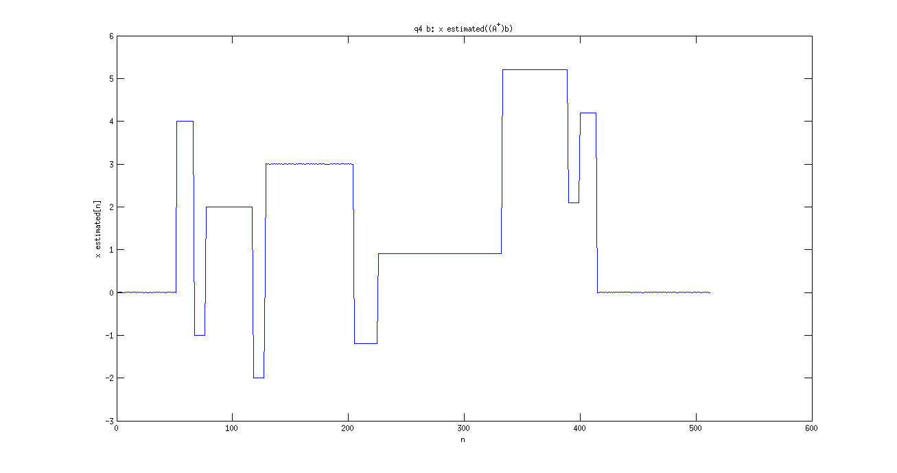
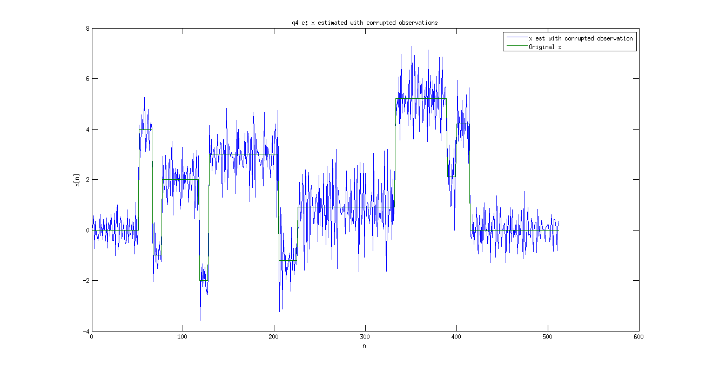
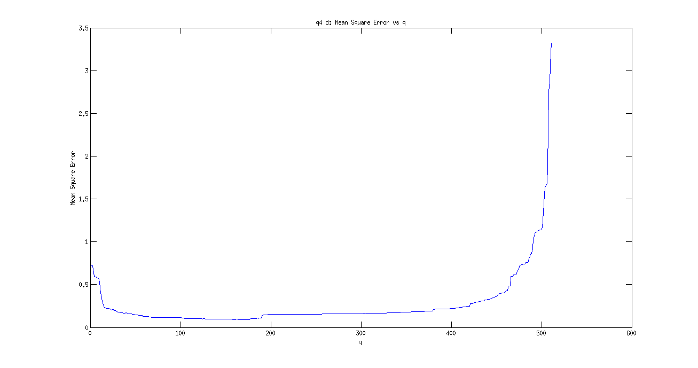
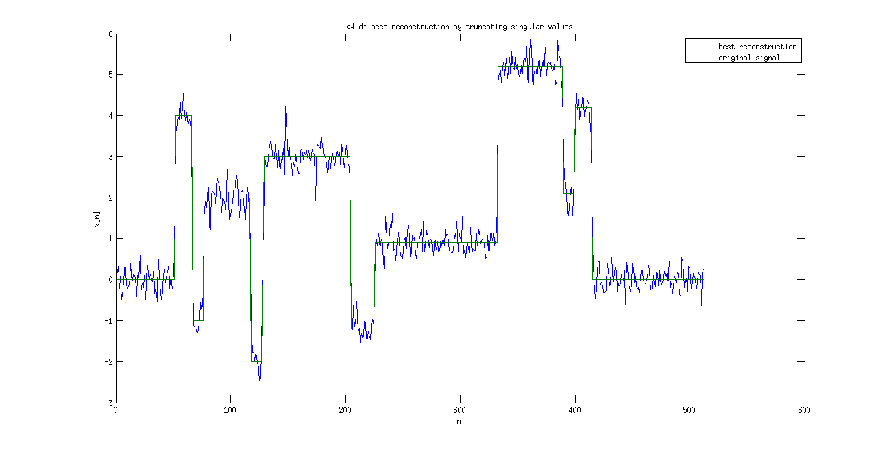
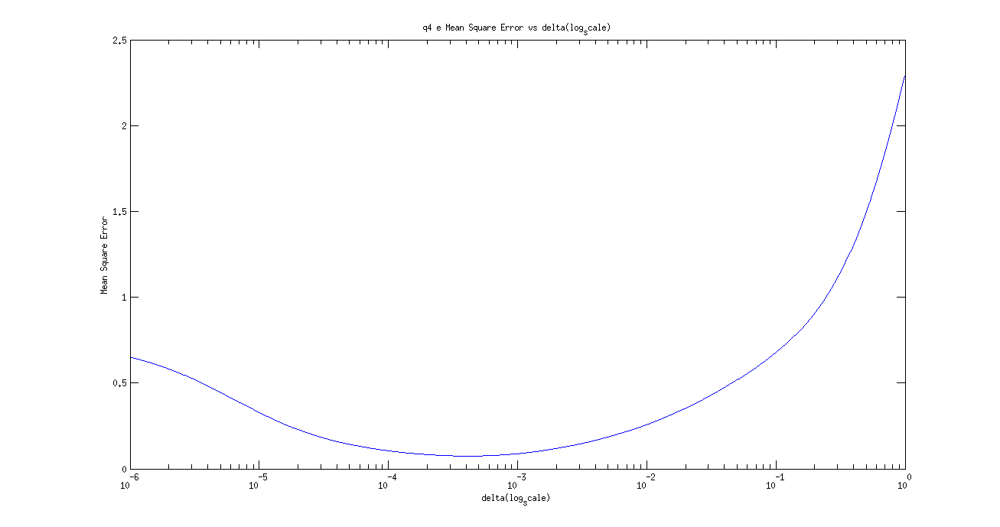
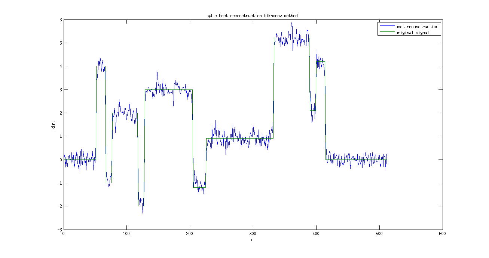
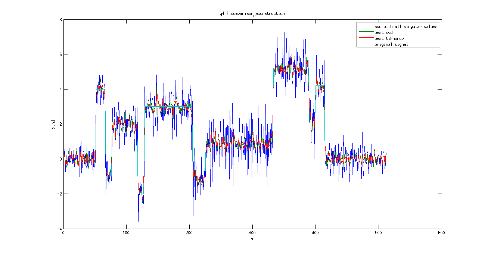

EE779: Assignment 5
Contents
Kalpesh Patil (130040019)
clear all close all load('data/blocks_deconv.mat');
(a). Find convolution matrix A
function [A] = findConvolutionMatrix(h,x)
N = length(x);
L = length(h);
M = N + L -1;
A = zeros(M,N);
for i = 1:M
for j = max(1,i-length(h)+1):min(i,N)
A(i,j) = h(i-j+1);
end
end
endN = length(x); L = length(h); M = length(y); A = findConvolutionMatrix(h,x);
(b) SVD of A
Since we are using uncorrupted version of y and all the singular values of to create A^+ (pseudo inverse of A), hence x will be perfectly reconstructed
[U,S,V] = svd(A); largest_singular_value = S(1,1) smallest_singlar_value = S(rank(A),rank(A)) p = rank(A); U_new = U(:,1:p); S_new = S(1:p,1:p); V_new = V(1:p,1:p); A_plus = V_new*inv(S_new)*U_new'; x_est = A_plus*y; fig = figure; plot(x_est); ylabel('x estimated[n]') title('q4 b: x estimated((A^+)b)'); xlabel('n') set(gcf, 'Position', get(0, 'Screensize')); saveas(fig,'results/q4_b.jpg','jpg');
largest_singular_value =
0.9987
smallest_singlar_value =
0.0029
 (c) Apply A_plus to noisy output
We have used currupted version of observations for reconstruction hence we are not able to reconstruct x accurately. Also it is observed that Mean Square Error of estimated x is much greater than that of y
x_est_noisy = A_plus*yn; fig = figure; plot([x_est_noisy,x]); x_svd_all = x_est_noisy; ylabel('x[n]') title('q4 c: x estimated with corrupted observations'); xlabel('n') legend('x est with corrupted observation','Original x'); set(gcf, 'Position', get(0, 'Screensize')); saveas(fig,'results/q4_c_x_estimated_with_corrupted_observations.jpg','jpg'); mse_x = mean((abs(x-x_est_noisy)).^2); mse_y = mean((abs(y-yn)).^2); mse_x_svd_all = mse_x; mse_x mse_y
mse_x =
0.7369
mse_y =
1.0680e-04
 (d) Truncated SVD
We try with different values of q i.e. we neglect last q singular values and try to reconstruct signal from remaining singular values. It was observed that initially reconstruction error decreases and then increases again after an optimal point. The best value of q was judged based on reconstruction error. Plot for error vs q is provided below.
q_list = (1:511); mse_x_list = zeros(size(q_list)); mse_x_min = Inf; for j = 1:length(q_list) A_trunc = zeros(M,N); A_plus_trunc = zeros(N,M); p = rank(A); q = q_list(j); for k = 1:p-q A_trunc = A_trunc + S(k,k)*U(:,k)*V(:,k)'; end for k = 1:p-q A_plus_trunc = A_plus_trunc + (1/S(k,k))*V(:,k)*U(:,k)'; end x_est_noisy = A_plus_trunc*yn; mse_x = mean((abs(x-x_est_noisy)).^2); mse_x_list(j) = mse_x; if(mse_x < mse_x_min) mse_x_min = mse_x; x_svd_best = x_est_noisy; q_best = q; mse_x_svd_best = mse_x; end end q_best fig = figure; plot(q_list,mse_x_list); ylabel('Mean Square Error') title('q4 d: Mean Square Error vs q'); xlabel('q') set(gcf, 'Position', get(0, 'Screensize')); saveas(fig,'results/q4_d_Mean_Square_Error_vs_q.jpg','jpg'); fig = figure; plot([x_svd_best,x]); ylabel('x[n]') title('q4 d: best reconstruction by truncating singular values'); xlabel('n'); legend('best reconstruction','original signal') set(gcf, 'Position', get(0, 'Screensize')); saveas(fig,'results/q4_e_best_reconstruction_svd_method.jpg','jpg');
q_best = 170 
(e) Tikhonov regularization
We will vary delta in log space (because linear space will take lot of time to reach the optimum value). It is observed that initially delta reconstruction error decreases as delta increases and reaches an optimal value. The reconstruction error starts increasing again. Optimal value of delta is will be used.
I = eye(size(A'*A)); delta_list = logspace(-6,0,1000); mse_x_list = zeros(size(delta_list)); mse_x_min = Inf; for j = 1:length(delta_list) delta = delta_list(j); x_tikhonov_est = (inv(A'*A+delta*I))*A'*yn; mse_x = mean((abs(x-x_tikhonov_est)).^2); mse_x_list(j) = mse_x; if(mse_x < mse_x_min) mse_x_min = mse_x; x_tikhonov_best = x_tikhonov_est; delta_best = delta; mse_x_tikhonov_best = mse_x; end end delta_best fig = figure; semilogx(delta_list,mse_x_list) ylabel('Mean Square Error') title('q4 e Mean Square Error vs delta(log_scale)'); xlabel('delta(log_scale)') set(gcf, 'Position', get(0, 'Screensize')); saveas(fig,'results/q4_e_Mean_Square_Error_vs_delta(log_scale)','jpg'); fig = figure; plot([x_tikhonov_best,x]); ylabel('x[n]') title('q4 e best reconstruction tikhonov method'); xlabel('n'); legend('best reconstruction','original signal') set(gcf, 'Position', get(0, 'Screensize')); saveas(fig,'results/q4_e_best_reconstruction_tikhonov_method.jpg','jpg');
delta_best = 4.1555e-04 
(f) Comparison of different methods
It is observed that chosing optimal q improves performance of SVD reconstruction method compared to taking all singular values blindly. Also Tichonov method performs better than optimal q svd method if optimal delta is chosen. Overall performance, Tichonov > Optimal q SVD > All SVD
fig = figure; plot([x_svd_all,x_svd_best,x_tikhonov_best,x]); ylabel('x[n]') title('q4 f comparison_reconstruction'); xlabel('n'); legend('svd with all singular values','best svd','best tikhonov','original signal'); set(gcf, 'Position', get(0, 'Screensize')); saveas(fig,'results/q4_f_comparison_reconstruction.jpg','jpg'); mse_x_svd_all mse_x_svd_best mse_x_tikhonov_best
mse_x_svd_all =
0.7369
mse_x_svd_best =
0.0922
mse_x_tikhonov_best =
0.0746
